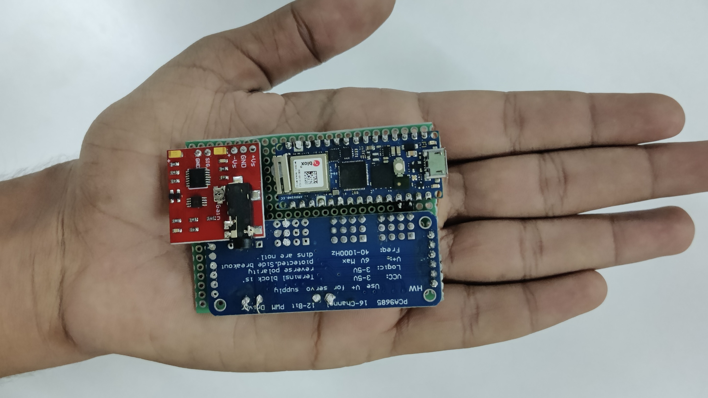
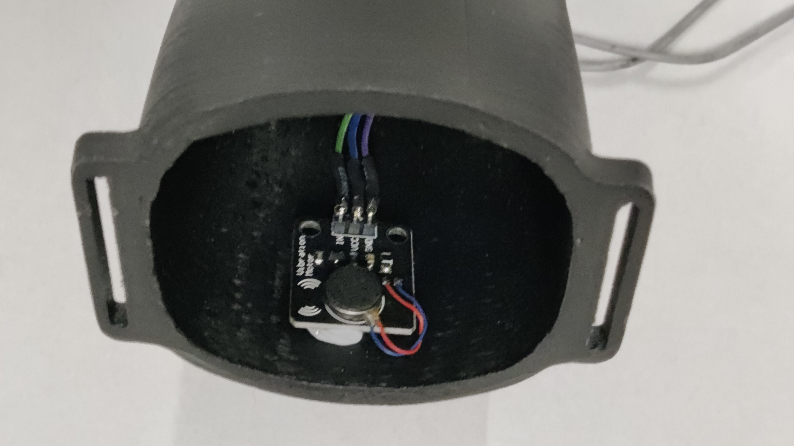

Tendon-Driven Prosthetic Hand.
A five-digit prosthetic hand designed and fabricated from scratch. Tendon-driven fingers with passive spring return, printed in ABS, no off-the-shelf chassis. It holds a 400 mL glass of water unassisted. Winner of GUJCOST ROBOFEST 2.0.

Mechanical design & fabrication
Passive spring return · 5 digits
22% volume reduction vs v1
GUJCOST ROBOFEST 2.0 · ₹650K
The brief.
Build a prosthetic hand that actually works, from nothing. No off-the-shelf kit, no bought chassis. Design the mechanism, print it, and make it grip. I led the team at Birla Vishvakarma Mahavidyalaya and owned the mechanical design and fabrication end to end, plus the custom PCB and the electronics integration underneath it.
Two things had to be true. The hand needed to actuate four fingers and a thumb independently and pick up objects repeatably. And it had to hold a 400 mL glass of water for a full minute, hands-off, without spilling, a stand-in for the kind of unglamorous task a prosthesis has to handle every day.
Hand architecture.
I modelled the whole hand in Autodesk Fusion 360, designing around three constraints that pull against each other: it had to be strong enough to carry a real load, light enough to wear, and repairable when something inevitably broke.
01 · Tendon drive with spring return
Each digit is tendon-driven. A servo pulls a cable routed through the finger to flex it; a spring returns it when the cable slackens. That choice does a lot of work at once. It moves the actuators out of the fingers and back into the palm and forearm, so the digits stay slim and low-inertia, and it halves the actuation you need per joint because the return is passive.
It also fails gracefully. A snapped cable leaves the finger open rather than locked shut, and a cable is a two-minute repair instead of a reprint.
- Cable routing channels designed into the printed finger segments, so no external guides to snag.
- Passive spring return, so no antagonistic actuator and no second cable per digit.
- Actuators relocated to the palm/forearm, keeping the fingers light and human-proportioned.
02 · The thumb
The thumb is where most printed hands give up, so it got a heavier structure and extra degrees of freedom than the fingers. Opposition is what makes the difference between a hand that closes and a hand that grips. Without it you cannot pinch, and you cannot get a stable hold around a cylinder like a glass.
03 · Material & fabrication
I printed the structure in ABS for its strength-to-weight and its tolerance for the post-processing the parts needed. Working the geometry against that material, thinning where load allowed and keeping section where the tendon paths and joints concentrate stress, took 22% of the volume out compared to the first proof-of-concept, without giving up grip.
Parts were 3D printed and finished in the institute's central workshop.
04 · What the first version got wrong
The proof-of-concept was overbuilt and awkward to service. The revision reworked the palm structure and finger sections, cut the volume, and made the assembly something you could actually take apart and put back together.

Electronics I built around it.
I designed a custom PCB for the hand and integrated the electronics stack onto the mechanical design, which mostly meant finding room for it. Packaging a controller, a 16-channel servo driver, and the wiring for five tendon servos plus sensors inside a hand-sized envelope is a mechanical problem as much as an electrical one.
- Arduino Nano RP2040 Connect as the controller, chosen for onboard Wi-Fi and Bluetooth.
- 16-channel servo controller driving high-torque servos for the tendons.
- sEMG electrodes positioned to pick up muscle activity from the residual limb.
- Tactile sensors and haptic motors to close the feedback loop back to the wearer.
Control, briefly.
A teammate handled the software side: a C++ neural network trained on roughly 2,200 samples to distinguish an active arm position from a passive one, and a web app for testing the hand finger by finger. My side of that boundary was making sure the mechanism gave it something clean to drive: consistent tendon travel, repeatable finger positions, and sensor mounting that did not move.
Does it work.
It picked up and held a 400 mL glass of water for a full minute, unassisted, without spilling, the objective the whole design was pointed at. Individual finger actuation and multi-object pickup both demonstrated.
Team BVM won GUJCOST ROBOFEST 2.0, the state-level robotics competition run by the Government of Gujarat, India, taking the ₹650,000 INR (about $8,800 USD) prize. The design also earned a design patent.
Build artifacts.



